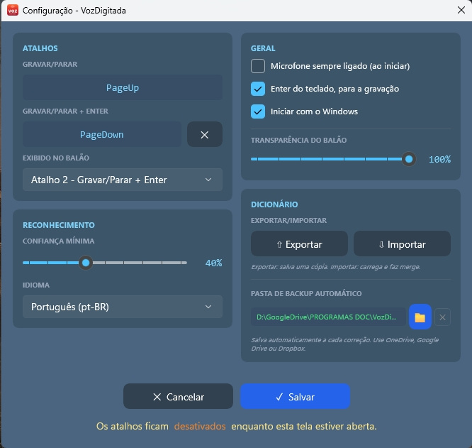
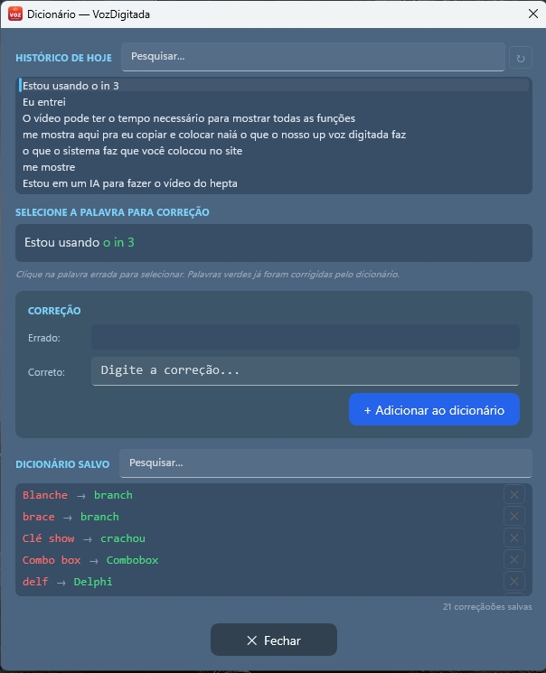
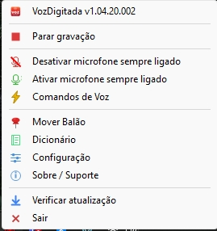
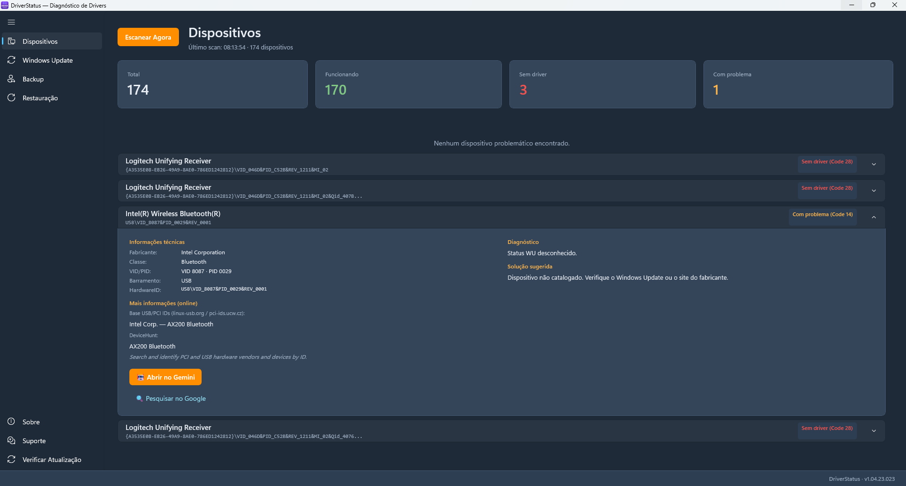
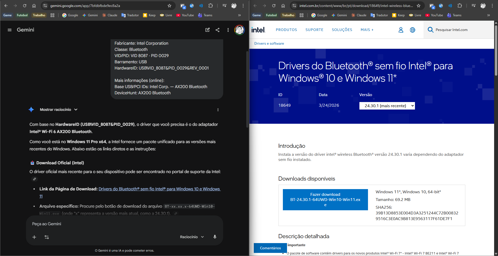
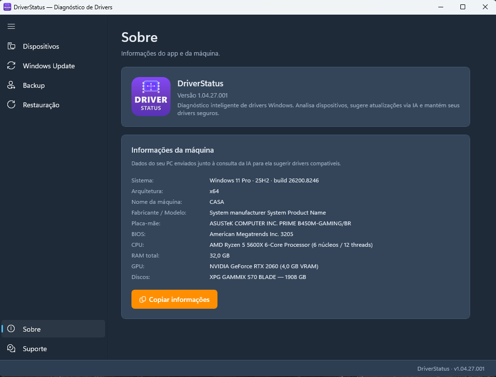

Ferramentas
inteligentes
para Windows.
Aplicativos gratuitos que resolvem problemas reais do dia a dia. Feitos por quem usa, para quem precisa.
VozDigitada
DisponívelTransforme sua voz em texto no campo ativo de qualquer programa. Atalhos de teclado, Enter automático, dicionário inteligente e balão flutuante.

DriverStatus
DisponívelDiagnostica drivers do seu PC, identifica problemas e sugere soluções. Integra com Windows Update, backup de drivers e facilita a interação com a IA.
Em breve...
DesenvolvimentoNovo aplicativo em desenvolvimento. Fique atento para novidades!
De problemas reais, nascem soluções reais
Sou programador e crio ferramentas que eu mesmo uso no dia a dia. Quando encontro um problema que não tem boa solução gratuita, eu construo uma.
O VozDigitada nasceu porque eu precisava ditar texto sem pagar assinatura — um app simples que transforma voz em texto em qualquer programa, com Enter automático e comandos de voz.
O DriverStatus nasceu porque diagnosticar drivers no Windows é frustrante — um app que escaneia o hardware, identifica problemas e facilita a busca pela solução certa, inclusive com IA.
Todos os meus aplicativos são 100% gratuitos, sem anúncios, sem coleta de dados. Feitos por quem realmente usa, para quem realmente precisa.
❤️ Gostou? Apoie o projeto!
Todos os aplicativos são 100% gratuitos e sem anúncios.
Se eles te ajudam no dia a dia, considere fazer uma doação de qualquer valor.
Pix
Cartão de Crédito / Débito

Pagamento seguro via Mercado Pago.
Você será redirecionado para o site oficial.
PayPal
Pagamento seguro via PayPal.
Você será redirecionado para o site oficial.
Fale Comigo
Meu objetivo é criar ferramentas que melhorem seu dia a dia.
Se tiver alguma dúvida, sugestão ou precisar de ajuda,
ficarei feliz em responder!
Transforme sua
voz em texto
instantaneamente.
O VozDigitada transforma sua voz em texto no campo ativo de qualquer programa. Pressione um atalho para gravar e o texto aparece em tempo real. Tem Enter automático, microfone sempre ligado, comandos de voz, dicionário inteligente e um balão flutuante que mostra o status.






Reconhecimento de Voz
Captura sua voz e digita automaticamente no campo ativo de qualquer programa com precisão.
Atalhos de Teclado
Um atalho para gravar e parar, outro para gravar, parar e enviar (Enter automático). Totalmente configurável.
Comandos de Voz
Controle por voz: "Voz gravar", "Voz parar", "Voz enviar" e outros — sem tocar no teclado.
Microfone Sempre Ligado
Ative o microfone permanente e controle tudo por comandos de voz. Pode desativar temporariamente quando quiser.
Dicionário Inteligente
Corrija palavras que o reconhecimento erra e o app aprende. Exportar, importar e backup automático na nuvem.
Balão Flutuante Móvel
Um balão na tela indica o status da gravação. Arraste para qualquer posição — ele lembra onde você deixou.
Atualização Automática
O app verifica e baixa atualizações automaticamente. Sempre na última versão disponível.
Configuração Completa
Personalize atalhos, idioma, sensibilidade do reconhecimento e comportamento do balão indicador.
Inicia com Windows
Configure para iniciar automaticamente com o sistema, já com o microfone sempre ligado se preferir.
Sim! O VozDigitada digita no campo ativo de qualquer programa do Windows — navegadores, editores de texto, Excel, e-mail, ERPs, terminais e mais. Basta o cursor estar posicionado em um campo de texto.
Não. O VozDigitada usa o Windows Speech Recognition, que funciona 100% offline. Todo o processamento de voz acontece localmente no seu computador — nenhum áudio é enviado para a internet.
100% gratuito, sem limite de palavras, sem assinatura, sem período de teste e sem anúncios. Você pode usar o quanto quiser, para sempre.
Você configura dois atalhos: um para gravar/parar normalmente, e outro que grava, para e envia (pressiona Enter automaticamente). Ideal para Visual Studio Code, Microsoft Teams, Bloco de Notas, campos de busca e qualquer programa — fale e envie sem tocar no teclado.
É um modo onde o microfone fica permanentemente ativo, aguardando comandos de voz. Você controla tudo falando: "Voz gravar", "Voz parar", "Voz enviar" — sem precisar tocar no teclado em momento algum.
Quando o reconhecimento de voz erra uma palavra, você cadastra a correção no dicionário. Na próxima vez, o app corrige automaticamente. Funciona com palavras individuais e frases de até 3 palavras. Você pode exportar, importar e fazer backup automático.
Sim! O VozDigitada funciona em português brasileiro.
O VozDigitada não coleta nenhum dado pessoal, não envia áudio para servidores e não possui telemetria. Todo o processamento é local. O código é transparente e o app está disponível na Microsoft Store.
⬇️ VozDigitada para Windows
Download disponível
Diagnostique seus
drivers em
segundos.
O DriverStatus escaneia todo o hardware do seu PC, identifica dispositivos com problemas e sugere a melhor solução: Windows Update, driver oficial ou pesquisa online. Faz backup de drivers, cria pontos de restauração e facilita a interação com a IA.



Scan Completo
Escaneia todo o hardware do PC via WMI. Identifica dispositivos sem driver, com falha ou com problemas.
Windows Update
Busca drivers disponíveis no Windows Update e instala com um clique. Cria ponto de restauração automaticamente.
Base de Conhecimento
Identifica dispositivos por VID/PID e sugere a melhor solução: driver oficial, Windows Update ou download direto.
Assistência por IA
Copia informações do dispositivo e abre o Google Gemini para análise inteligente. Sem custo de API.
Backup de Drivers
Exporte todos os drivers instalados para uma pasta. Restaure quando precisar com um clique.
Ponto de Restauração
Crie pontos de restauração do Windows antes de qualquer alteração. Segurança antes de tudo.
Consulta Online
Busca em bases USB e PCI internacionais para identificar dispositivos desconhecidos automaticamente.
Pesquisa Google
Gera pesquisa automática no Google com o nome do dispositivo e versão do Windows para encontrar o driver.
100% Local e Seguro
Não coleta dados, não envia informações. Todo o processamento acontece no seu computador.
Ele complementa. O DriverStatus faz um diagnóstico mais profundo, identifica dispositivos problemáticos, consulta bases online e sugere soluções — algo que o Gerenciador de Dispositivos não faz.
O scan básico funciona sem admin. Recursos avançados como Windows Update, backup de drivers e pontos de restauração pedem elevação de privilégios automaticamente quando necessário.
O DriverStatus usa o próprio Windows Update para instalar drivers — a mesma fonte que o Windows usa. Além disso, cria ponto de restauração antes de qualquer alteração.
O app copia as informações do dispositivo e abre o Google Gemini no navegador. Você cola com Ctrl+V e a IA analisa o problema. Sem custo de API, sem conta obrigatória.
Não. O DriverStatus é 100% local. Não envia nenhuma informação para servidores, não tem telemetria e não coleta dados pessoais.